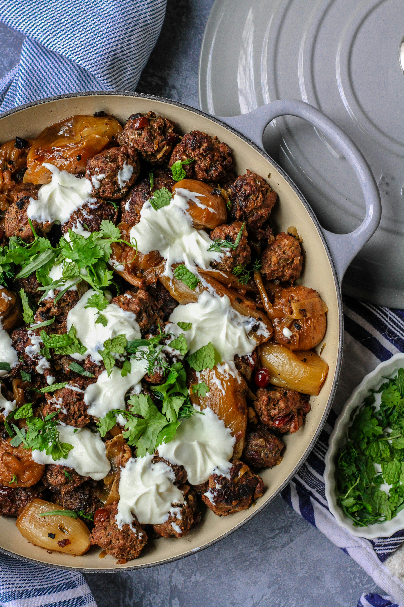
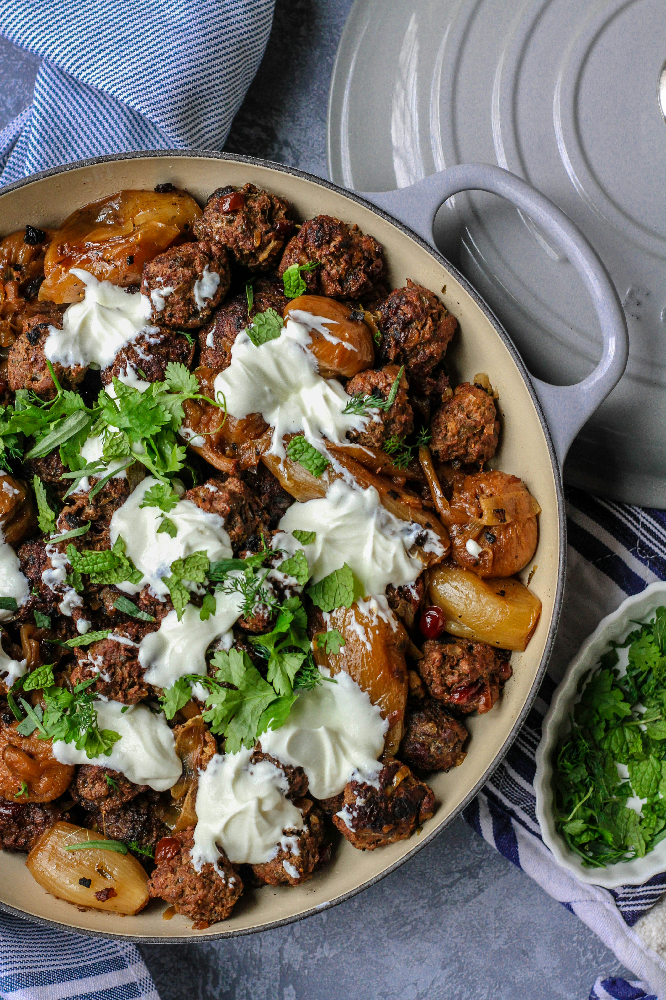

FoodFInder is a one-stop online resource for food information. Explore nutritional values, cooking methods, and cultural origins for a vast array of dishes. A user-friendly database for foodies, chefs, and curious eaters to discover and learn.

 
